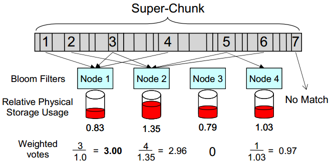

| Venue | Category |
|---|---|
| FAST'11 | Distributed Deduplication |
Tradeoffs in Scalable Data Routing for Deduplication Clusters1. SummaryMotivation of this paperMethod Implementation and Evaluation2. Strength (Contributions of the paper)3. Weakness (Limitations of the paper)4. Future Works
build a deduplication cluster storage system with individual high-throughput nodes. a cluster-wide data reduction ratio close to that of a single very large deduplication system.
using superchunk.
routing algorithm
load balancing
for high throughput.
map each bin to a given node.
Bin migration occurs when the storage usage of a node exceeds the average usage in the cluster by some threshold. (defaulting to 5%)
Data Routing
how to represent a superchunk? use the first, maximum, minimum, or most common fingerprint.
suppose the hash values are often uniformly distributed.
Advantages
1) reduce overhead for recording node assignments 2) reduce requirements for recovering this state after a system failure.
Disadvantages
1) potential loss of deduplication 2) potential for increased data skew if the selected features are not uniformly distributed
use Bloom filter to count the routing algorithm of times each fingerprint in super-chunk is already stored on a given node. vote-based approach, if the highest weighted vote is above a threshold, select that node.
voting benefit threshold
To mitigate the overhead of Bloom filter lookup
N chunks, M nodes, MN lookups
Sample some chunks for lookup
, reduce the Bloom filter lookup.

Advantages
1) provide the opportunity to incorporate expected deduplication and capacity balancing while assigning chunks to nodes.
Disadvantages
1) increased cost in computation and memory or communication overhead
Evaluation
Metrics
Feature selection
impact deduplication throughput, and effective cluster-wide deduplication.